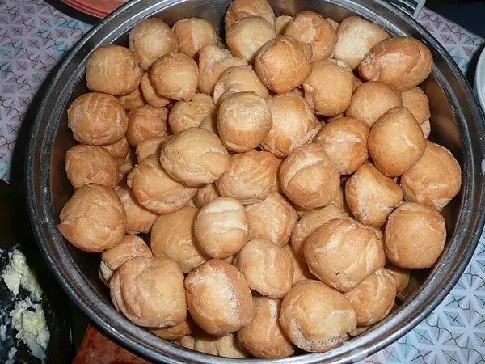

Фото: Brücke-Osteuropa, Public domain

Баурсаки
Пышные кусочки дрожжевого теста, обжаренные во фритюре до золотистого цвета
110 мин8 порц.347 ккал на порциюБ 9 · Ж 13 · У 49Среднеазиатская кухня
Продукты на 8 порц.
- Мука пшеничная3 стак.
- Молоко250 мл
- Дрожжи сухие1 пакетик
- Сахар1 ст. л.
- Соль1 ч. л.
- Яйцо куриное1 шт
- Сливочное масло30 г
- Растительное масло60 мл
Как готовить
- Подогрейте молоко до тёплого, около 37 °C. Растворите в нём дрожжи и сахар, оставьте на 10 минут до пенки.
- Добавьте яйцо, соль и растопленное масло, перемешайте.
- Всыпайте муку частями и замесите мягкое тесто, 7 минут. Накройте и оставьте в тепле на 1 час, пока оно не увеличится вдвое.
- Раскатайте тесто пластом 1 см и нарежьте ромбами или квадратами 4×4 см. Дайте им подойти 15 минут.
- Разогрейте в глубокой кастрюле 0,5 л масла на среднем огне. Проверьте кусочком теста: он должен сразу всплыть в пузырьках.
- Жарьте баурсаки порциями по 1-2 минуты с каждой стороны, пока они не раздуются и не станут золотистыми.
- Выкладывайте на бумажное полотенце. Подавайте к чаю, супу или с мёдом.
Совет. Для фритюра нужно около 0,5 л масла, впитывается примерно 60 г. Если масло слишком горячее, баурсаки потемнеют снаружи и останутся сырыми внутри.